| 日付 | 2016年12月18日（日） |
|---|---|
| 山域 | 奥武蔵 |
| メンバー | 家族（妻、長女・5歳、長男・3歳） |
| 山行形態 | 子連れ日帰り |
| アクセス | 車 |
| ルート (Map) | 日野沢小前駐車場 (8:41) - (8:54) 水潜寺 - (9:45) 札立峠 - (10:03) 破風山 (11:21) - (12:18) 車道 - (12:43) 日野沢小前駐車場 |
今年最後の山登りは破風山。秩父にある小さな山で山麓には水潜寺という寺がある。
短いコースなので今回は息子を全て歩かせるつもりだ。
キャリアを持っていると甘えるので、キャリアを持参せずに出発する。
無料の駐車場に車を停める。標高250m。
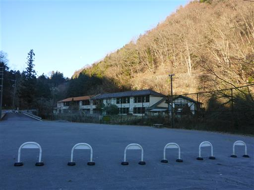
駐車場は小学校のグラウンドの一部が整備されて作られたもののようだ。
小学校はすでに廃校になっている。
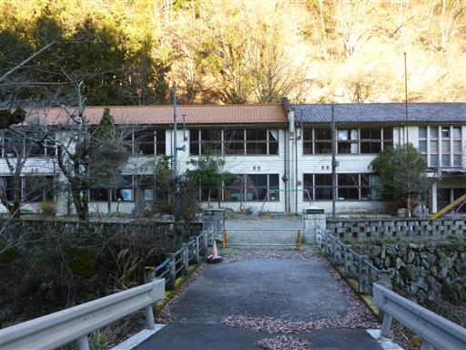
車道は白く染まっていて、歩いていても良く滑る。
車もたまに通るため結構怖い道だ。
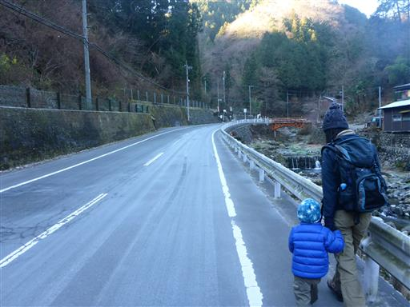
水潜寺入口に到着する。
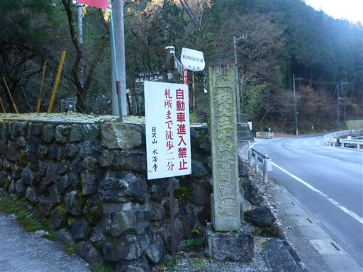
寺は少し坂を登った山の中にあるようだ。
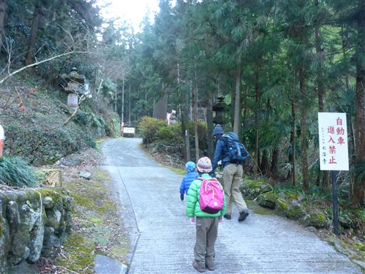
水潜寺に到着。秩父三十四観音霊場の締めくくり、
札所三十四番がこの水潜寺だ。

本堂には、きれいな装飾が施されている。
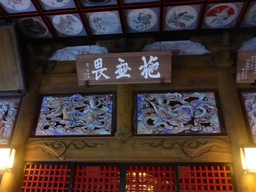
ここから登山道に入って行く。クマに注意の案内が出ている。
今年はクマが多いそうだ。
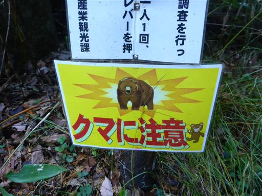
しばらくは沢沿いの陰気な登山道が続く。今日は気温が低くかなり寒い。
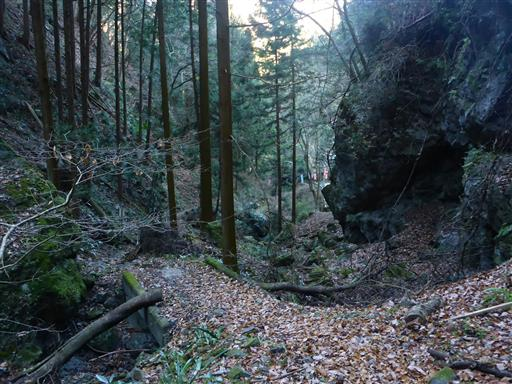
1箇所、斜面が崩壊して無数の木が倒れている。

登山道の場所だけ、道を塞ぐ木が切られている。
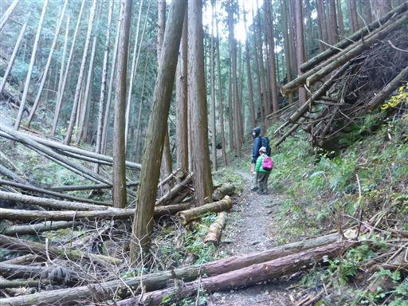
息子は今のところ、文句を言わず頑張って歩いている。
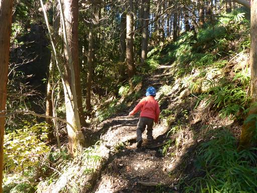
札立峠に到着。巡礼道で札所三十三番から水潜寺に続く道だ。
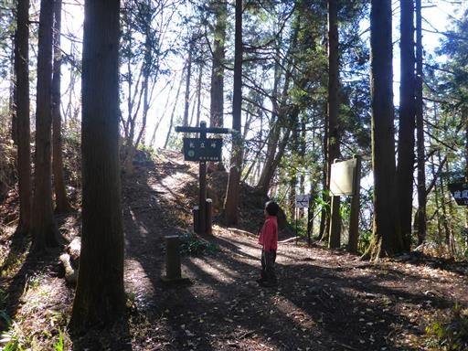
峠の広場の真中に小さな観音様が祀られている。
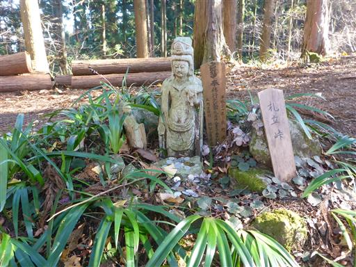
ここから先は尾根道。日が当たって気持ちが良い。
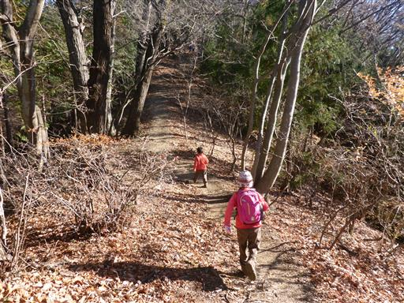
大きな松ぼっくりを見つける。もう実は全て飛んでしまっている。
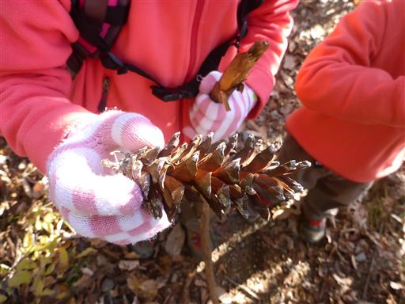
急斜面は手をついて登っている。足が短いと大変そうだ。
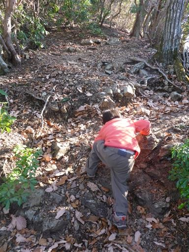
破風山の山頂に到着。標高627m。
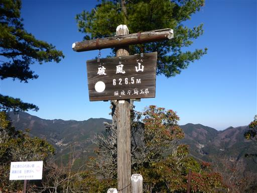
山頂からは南側の展望が広がり、秩父盆地が一望できる。
右にある目立つ山は秩父のシンボル・武甲山だ。
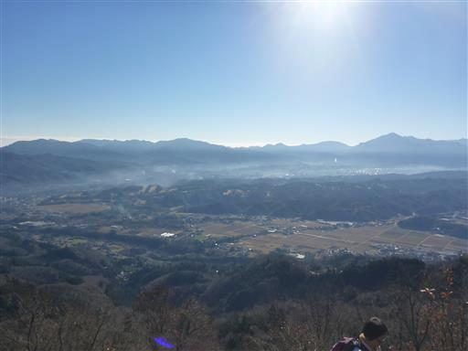
北の方は木が邪魔しているが、その間から城峯山が見えている。
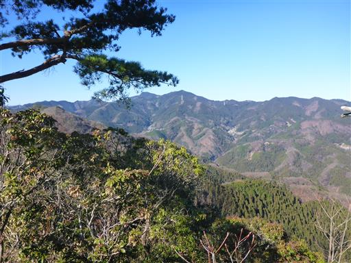
遠く日光男体山も微かに見えている。
今日は比較的空気が澄んでいて、遠くまで見渡せる。
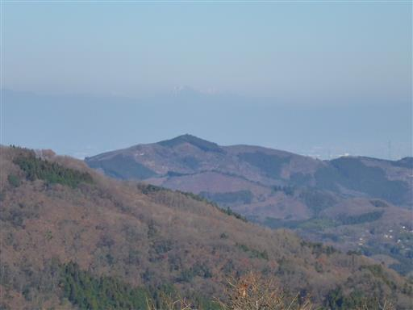
本日はカップラーメンを持参している。
早速、山頂でお湯を沸かしてカップラーメンを作る。
子供達も久しぶりのカップラーメンを楽しんでいる。
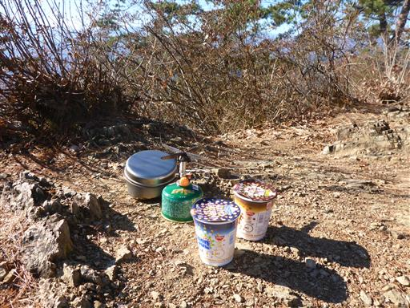
下山開始。途中でものすごい数の年輩団体登山者とすれ違う。
出発が遅れていたら山頂の大混雑に巻き込まれるところだった。
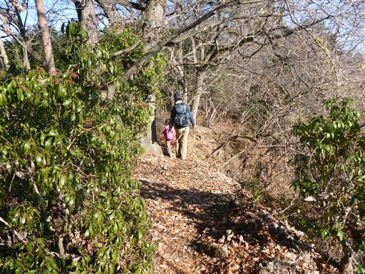
中腹に大きな東屋がある。
山頂の混雑を嫌ってか、ここで昼食をとっている人がいる。
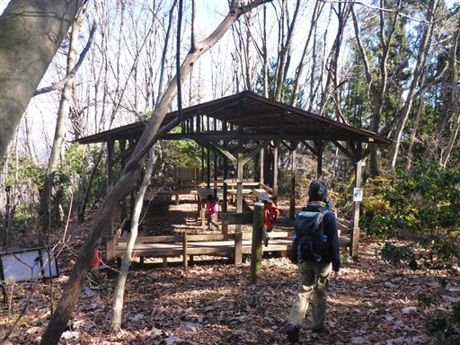
猿岩に到着。名前の由来は不明だが、猿には似ていない。
子供達は登ろうと意気揚々と取りついたが、難しくて途中で断念している。
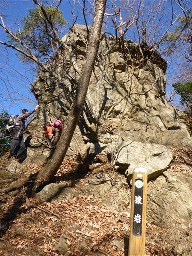
下山は登りよりも快調。このまま最後まで歩ききれそうだ。
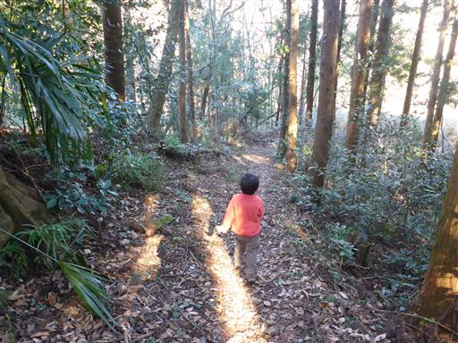
無事に下山する。ここから３０分ほど車道を歩いて駐車場に戻る。
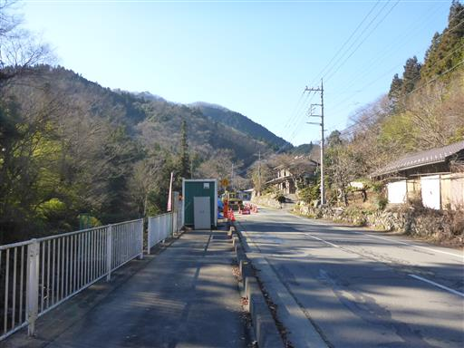
まだ時間が早いので、近くにある秩父華厳の滝に寄り道する。
入口にある案内には10位と書かれているが、何のランキングかがよく分からない…
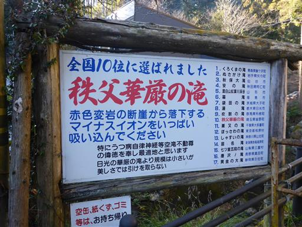
滝に到着。そこそこ立派な滝だが、滝のすぐ上に見える橋が無粋だ。
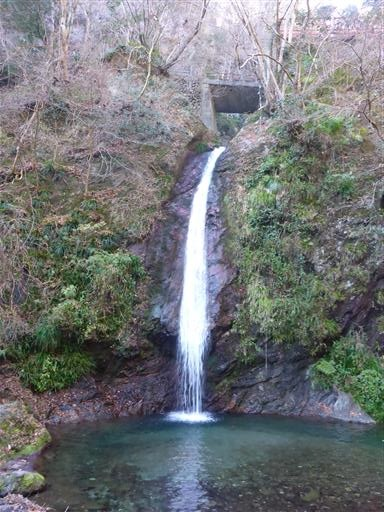
少し足を延ばして、滝の上に見えた橋に行ってみる。
古くて崩れ落ちそうな展望台があり、上から滝を見下ろす。
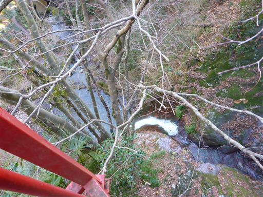
側には大きな不動明王がある。
これも古い代物で、昭和の遺物という感じだ。
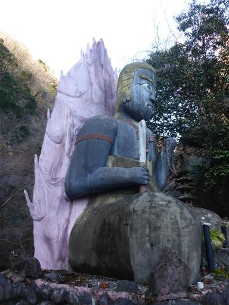
息子がもっと滝が見たいと言っているため、
もう少し足を延ばして上空滝を訪れる。「かみそらたき」と読む。
悪くない滝だが息子は不満顔。もっと「すごい」滝が見たい、という意図だったようだ…
小さい山と滝だったが、息子はしっかり歩ききり、天気もそこそこで、本年の良い締めくくりとなった。
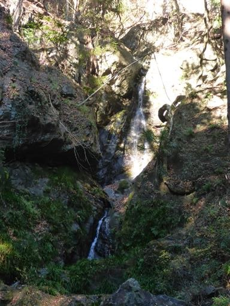